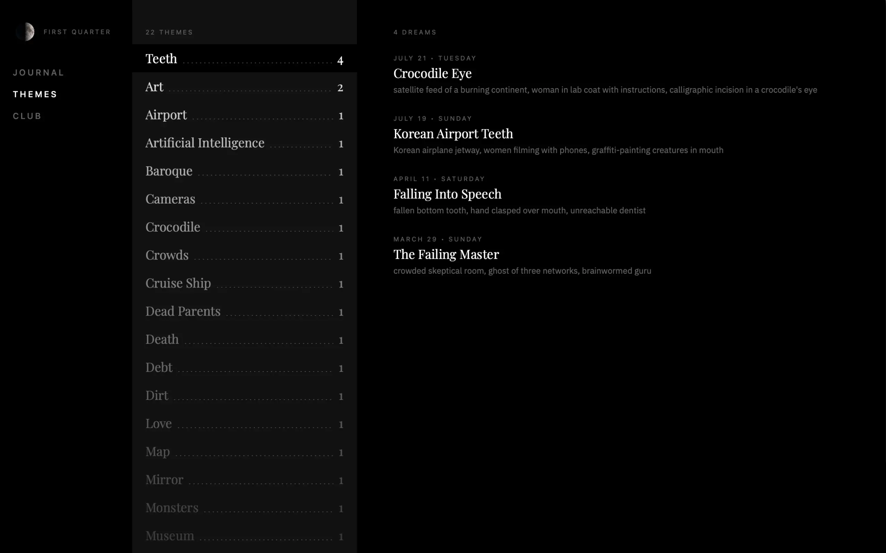
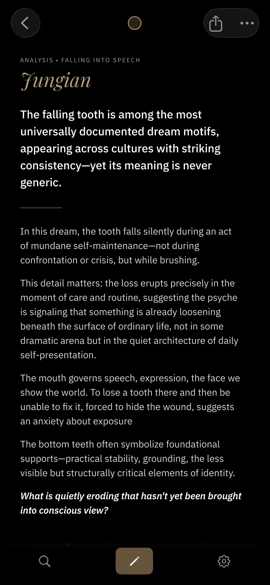
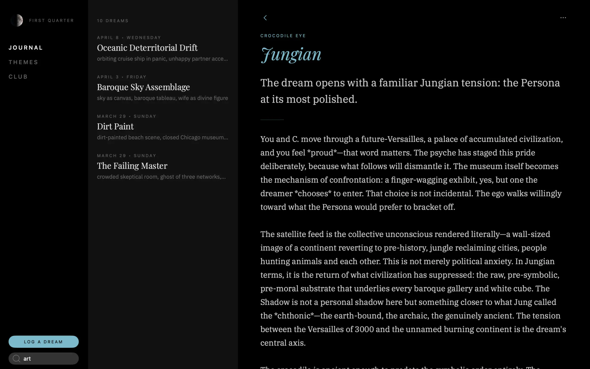
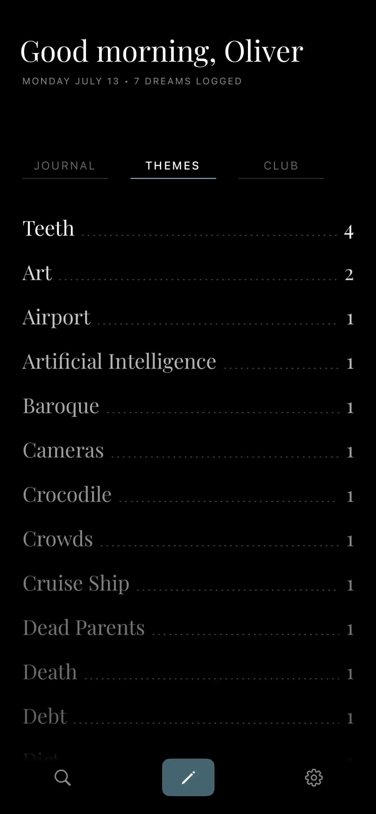

Waxing Gibbous
Week 31 • Day 1
Dream Club
A dignified home for your dreams.
Free for 30 days, then $10 to unlock it forever on all devices with ongoing updates.
Waxing Gibbous
Week 31 • Day 1
A dignified home for your dreams.
Free for 30 days, then $10 to unlock it forever on all devices with ongoing updates.







Dreams dissolve fast. Dream Club is built for the hazy minutes after waking: a hushed room where you can set down a dream before it evaporates and return to it later with questions.
An archive of your dreaming life. Every dream you log stays on your device and in your own iCloud—synced across your devices, safe through reinstalls, readable by nobody but you unless you choose to share it.
Analyze your dream through three distinct lenses:
Each analysis offers a question to carry into the day.
Every analyzed dream's symbols—fire, staircases, teeth—to a growing inventory of your recurring motifs. Your mythology will surface.
Dreams need to be told. Create a private, invite-only group of up to twelve people you know and share a dream when you choose to. When your dream and a friend's dream share the symbols, Dream Club delivers a synchronicity alert.
No ads. No trackers. No feeds or strangers. Your journal never touches our servers unless you request an analysis (processed, never stored) or share a dream with your circle of friends.
Signing in with your Apple ID is optional: the journal and the analysis work without an account. Read our privacy policy →